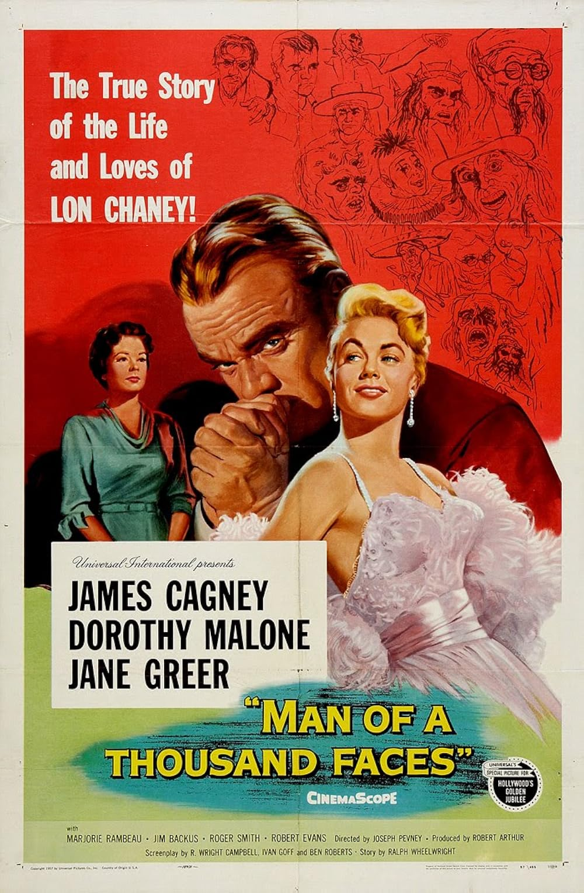

Man of a Thousand Faces
30th Academy Awards
(Oscars 1958)
1 Nomination, 0 Awards
| Nominations | ||
|---|---|---|
| Category | Nominees | Result |
| Writing (Story and Screenplay--written directly for the screen) | Ben Roberts, Ivan Goff, Ralph Wheelwright, and R. Wright Campbell | Nominated |